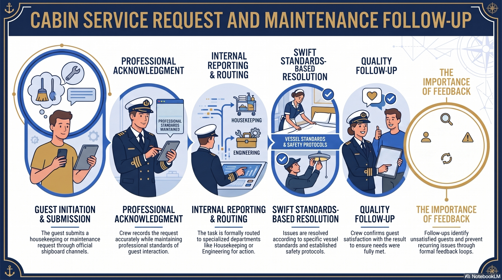

Unit 3: Cabin Service, Housekeeping, Laundry, and Maintenance Communication
How can cabin and maintenance teams protect privacy, cleanliness, comfort, and service continuity through accurate communication?
Comprehensive Cruise English UnitExpanded Unit Introduction
This unit integrates maritime knowledge, cruise hospitality, professional English, operational communication, and safety awareness. Students are expected to understand the onboard system, select accurate vocabulary, adapt language to guests and crew, and produce clear spoken and written messages.
The detailed content is divided across seven shorter pages to minimize scrolling fatigue. Each page builds from foundational knowledge to realistic application, assessment, and reflection. Progress, notes, bookmarks, Thai Assist, saved vocabulary, and written drafts remain available throughout the portal.
Detailed Learning Outcomes
Describe the cabin-service cycle and housekeeping standards.
Use professional language for requests, privacy, access, and follow-up.
Report defects using location, symptoms, urgency, and current status.
Use passive voice and present perfect for completed or pending work.
Write a cabin discrepancy report and conduct a service-recovery dialogue.
Unit Roadmap
Purpose, outcomes, standards, and visual orientation
2. VocabularyTerminology, collocations, pronunciation, and production
3. Main Concepts & ReadingDetailed discussion, comparisons, reading, and comprehension
4. Grammar, Listening & SpeakingGrammar, phrase bank, dialogue, audio, and professional writing
5. Case Study & VisualsOperational data, stakeholders, visuals, and decisions
6. Applied ActivityPractical task, decision tool, output template, and rubric
7. Practice & CheckTen-item quiz, written tasks, case, and self-assessment
Visual Overview

Unit 3 Visual Summary
Before You Begin
- Write two things you already know about this cruise operation.
- Write one professional phrase you expect to use.
- Predict one service, safety, or communication risk.
Detailed Unit Orientation: Start With the Big Picture
Simple explanation: This unit takes place in the guest cabin cycle involving cleaning, privacy, linen, amenities, laundry, defect reporting, lost property, sanitation, and technical follow-up. Students are learning more than isolated English expressions. They are learning how language controls a real work process: who receives information, what facts must be checked, what action follows, and how the result is confirmed.
Why this matters on board: The purpose of the unit is to protect guest privacy, record requests accurately, distinguish service needs from technical defects, and coordinate housekeeping with engineering and Guest Services. In a shipboard environment, an incomplete message can cause delay, repeated work, guest frustration, loss of accountability, or a safety risk. The goal is therefore accurate action through accurate language.
The Complete Operational Process
Teach the process in order. Do not ask students to memorize all details at once. First demonstrate one step, model the language, ask students to repeat the key information, and then connect it to the next step.
Confirm the cabin and request
Repeat the cabin number, guest name when appropriate, requested item or service, desired time, and any access restriction.
Check privacy and entry status
Observe Do Not Disturb indicators, follow knocking and announcement procedures, and enter only with authorization.
Inspect before acting
Identify whether the matter is routine service, damage, a maintenance defect, a sanitation concern, or possible lost property.
Complete or refer the task
Housekeeping handles approved service tasks; engineering handles technical repair; security or Guest Services may be needed for lost property or disputed items.
Protect evidence and belongings
Do not move suspicious items unnecessarily. Record where an item was found and follow the approved custody procedure.
Update and close
Record the action, status, outstanding work, responsible person, guest notification, and time for reinspection or follow-up.
Who Does What?
Students often understand vocabulary but still contact the wrong person. Use the table to show that professional crew members must understand both their own responsibility and the functional boundary of other teams.
| Department or Role | Main Responsibility |
|---|---|
| Cabin steward / attendant | Cleaning, bed preparation, amenities, linen, cabin presentation, and initial guest contact. |
| Housekeeping supervisor | Work allocation, quality inspection, priority control, sanitation escalation, and staff support. |
| Laundry team | Guest laundry, uniforms, linen processing, tagging, stain information, and delivery status. |
| Engineering | Air-conditioning, plumbing, lighting, electrical outlets, fixtures, locks, and other technical defects. |
| Guest Services | Complex complaints, room moves, service recovery, accessibility arrangements, and communication records. |
| Security / Lost property | Evidence control, found items, disputed property, prohibited items, and formal incident procedures. |
Four Model Communication Functions
| Communication Function | Model Language |
|---|---|
| Permission | “Housekeeping. May I enter to deliver the requested towels?” |
| Status update | “The bathroom has been cleaned, and engineering is currently checking the drainage.” |
| Defect report | “Cabin 6124: air-conditioning running but not cooling; room temperature twenty-eight degrees.” |
| Lost property | “A bracelet was found beside the bedside table at 1015 and transferred according to the lost-property procedure.” |
Teacher check: Ask students to identify the location, action, responsible party, and follow-up in each model. If one element is missing, have them improve the message.
Guided Class Discussion With Expected Ideas
- What can go wrong when a crew member gives only a general location?
Expected idea: The response team may search the wrong area, waste time, or fail to protect people near the actual hazard. - Why should a crew member repeat important information?
Expected idea: Repeat-back detects errors in names, numbers, locations, times, and instructions before action begins. - Why is referral not the end of responsibility?
Expected idea: The guest or operation still needs confirmation, an update, and evidence that the task was completed. - When should normal hierarchy be shortened?
Expected idea: Immediate safety, security, or medical risk must be reported rapidly through the emergency procedure.
Mastery Indicators
By the end of this unit, students should be able to demonstrate—not only describe—the following abilities:
- I can request and confirm permission before cabin entry.
- I can describe technical symptoms rather than using vague labels.
- I can use present continuous and passive status language accurately.
- I can handle found or missing property without assumptions.
- I can write a complete cabin-service and maintenance follow-up record.